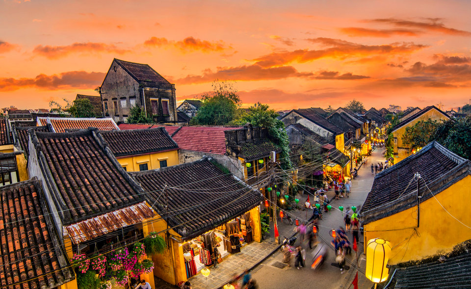

Kinh Nghiệm Du Lịch Việt Nam
Không có nhiều quốc gia có sự đa dạng và thú vị như Việt Nam. Nơi đây chứa đựng những biến động sâu sắc về lịch sử, những cánh đồng quê đẹp như tranh vẽ, bãi biển thiên đường, đồ ăn tuyệt vời và cảnh sắc thiên nhiên độc đáo. Chính vì thế đất nước chúng ta trở thành điểm đến hấp dẫn thu hút được rất nhiều du khách trong những năm gần đây.
Thiên Nhiên
Đến thăm đồng quê Việt Nam bạn sẽ có cơ hội thấy những cảnh đẹp xuất sắc, đặc biệt là ở miền Bắc Việt Nam. Sapa là điểm đến được ưa chuộng nhất. Ngôi làng này nằm trên núi cao và nổi tiếng với ruộng bậc thang hùng vĩ. Trekking qua vùng đất này chắc chắn là trải nghiệm không thể nào quên. Hướng về phía Nam của Hà Nội bạn sẽ tới được vịnh Hạ Long. Gần ba ngàn mỏm đá mọc dựng đứng từ dưới biển, góp phần tạo nên hình ảnh ấn tượng tuyệt đẹp. Hãy làm một chuyến đi tàu trên vịnh để có thể thưởng ngoạn cảnh đẹp chân thực hơn. Và cũng về phía Nam của Hà Nội bạn có thể ghé qua Ninh Bình. Nơi đây vẫn chưa bị khai thác du lịch quá nhiều. Đối với chúng tôi, thực sự thiên nhiên của đất nước quá tươi đẹp. Một điểm đến khác bạn không thể bỏ qua chính là Phong Nha. trong công viên quốc gia này bạn sẽ có cơ hội chiêm ngưỡng những hang động đẹp nhất Việt Nam.
Các Thành Phố
Thủ đô Hà Nội với nhịp sống hối hả và đầy ắp những món ăn đậm văn hóa. Trải nghiệm ở một quầy bán thức ăn trong phố cổ là một điều đáng nhớ. Thành phố Hồ Chí Minh, hay Sài Gòn, là thành phố hiện đại hơn cả. Không khí ở đây hoàn toàn khác biệt với thủ đô. Bạn nên chắc chắn là mình không bỏ lỡ bảo tàng chiến tranh nhé. Và ngôi sao của bài viết này, không nơi nào khác chính là Hội An. Đây là thành phố mà chúng tôi cực kì yêu thích. Cảnh đẹp như tranh vẽ với một bầu không khí đồng quê thanh bình. Rất nhiều du khách đã đến đây và không muốn rời đi, hầu hết đều ở lại lâu hơn dự tính. Đà Lạt cũng sẽ mang lại cho bạn không khí độc đáo. Ngoài cảnh sắc hết sức lãng mạn, bạn cũng có thể tham gia rất nhiều hoạt động mạo hiểm trên các ngọn núi cao ở phía Nam thành phố. Ngoài ra Huế và các vùng lân cận có khá nhiều cảnh đẹp được nhiều du khách yêu thích.
Con Người
Trải qua hàng nghìn năm, nền nông nghiệp lúa nước, lối sống quần cư và công cuộc dựng nước và giữ nước đầy gian khổ đã tạo nên một nền văn hóa Việt Nam giàu bản sắc và tính cách đặc trưng của con người Việt Nam là cần cù, chịu khó, giàu lòng yêu nước, đoàn kết, bao dung, rộng mở và dễ hòa nhập. Việt Nam là quốc gia đa dân tộc, với 54 tộc người, trong đó dân tộc Kinh chiếm hơn 85% dân số. Nền nông nghiệp lúa nước định canh định cư, những yêu cầu về thủy lợi cũng như việc bảo vệ an ninh, chống thú dữ và kẻ thù đã làm cho ý thức quê hương của người Việt vô cùng bền chặt Lòng yêu nước là tình cảm sâu nặng trong lòng toàn dân Việt Nam..jpg)
Về Chúng Tôi
VieTravel không ngừng sáng tạo ra những sản phẩm, dịch vụ… mang lại sự thỏa mãn cao nhất cho khách hàng. Tích cực tham gia các hoạt động xã hội nhằm tạo ra nhiều lợi ích chung cho cộng đồng và toàn xã hội.+ Cung cấp cho khách hàng những sản phẩm, dịch vụ tốt nhất trong ngành du lịch...
+ Luôn tìm hiểu và nắm bắt nhu cầu của khách hàng, đối tác để có những bước đi phù hợp. Tận tụy với khách hàng và luôn phấn đấu để đáp ứng tốt nhất những nhu cầu của khách hàng.
+ VieTravel thấu hiểu khách hàng luôn luôn là người bạn đồng hành cùng với bước đường phát triển của chúng tôi. Tạo dựng được niềm tin với khách hàng là một trong những yếu tố cốt lõi để đưa VieTravel ngày một phát triển, thịnh vượng.
+ Sự thỏa mãn của quý khách hàng là niềm hạnh phúc của chúng tôi.